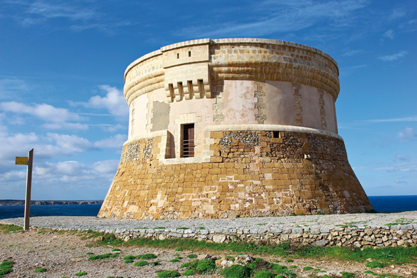

Fornells, sea and gastronomy
 To speak of Fornells is to speak of the sea. Its port has sheltered numerous ships, since time immemorial. The first historical documents are from 1.300 and tell of the arrival of various Genovese embarkations. At this time there was no settlement.
To speak of Fornells is to speak of the sea. Its port has sheltered numerous ships, since time immemorial. The first historical documents are from 1.300 and tell of the arrival of various Genovese embarkations. At this time there was no settlement.
During the XVI century Menorca fortified to protect itself against enemy attacks. At that time the San Antonio (St. Anthony) fort was constructed and those who had built it stayed to live on the outskirts. Later the San Antonio chapel was built. Slowly Fornells grew and people established there with surnames that still exist nowadays: Fuxá, Garriga, Roselló, Riera, Sans…
Later on during the British Domination, the military garrison in Fornells became foreign. The locals established links with the British and the town continued to grow.
In 1780, the chaplain for the troops in the San Antonio castle described the Fornellers thus: “The few inhabitants who live near to the castle are very poor. Their houses built of stones and beams; but despite this they are happy people. Here everything has to be brought in and those who come must think to give something to these generous and honourable people. Everything they have they share with great pleasure. I should like to explain how a poor citizen of the town gave me a little salt and pasture for my horse”.
 In the XVIII century new commerce started such as the extraction of salt. This occurred when the British government ceded some land in the port of Fornells to establish salt flats that were run by a Greek community.
In the XVIII century new commerce started such as the extraction of salt. This occurred when the British government ceded some land in the port of Fornells to establish salt flats that were run by a Greek community.
After two British dominations and a French one, Menorca came back into Spanish hands during the reign of Carlos (Charles) III. The monarch ordered the destruction of the San Felipe and San Antonio forts in a controversial decision in 1782; later the island became British again and went back to Spain under the Treaty of Amiens in 1802.
Fornells continues to be strongly connected to the sea. It is the only town in Menorca that can consider itself to be typically sea faring. The Archduke Luis Salvador from Austria relates in his chronicles that the “Fornells fishermen are the most daring and fearless, and as a result many are lost at sea”.
As time went by the Fornellers became specialists in the capture of lobster. At the end of the XIX century Fornells is a place frequented by people from other towns in Menorca. The Archduke also comments that ”Many people from Mahón visit when they want to have a festive day and a good lunch of fresh fish of excellent quality”. What no-one could imagine then was how tourism would increase to the point of changing their economy.
Slowly tourists began to come from other countries. In the 1930´s two of the first ones arrived, Hans Hartung and his wife Anna-Eva Bergman. She described in great detail the epoch before the civil war and said: “The fishermen live an ideal life, each one with a small cottage, garden, and some land”. Anna also comments that the standard of living is good and it is made sure that no-one has to live in poverty, adding that they have raffles to help the poor.
At that time there was a tremendous social cohesion, possibly because of the feeling of isolation from the rest of Menorca.
Fornells, like the rest of Menorca underwent great change at the end of the XX century with the tourist boom. New businesses opened and new residential urbanizations were built.
The town changed in character and in economy. The residents are convinced that tourism has improved the quality of life and financial security; however they admit, sincerely, that they have lost a lot of human contact; relations between neighbours are colder than they were. It is the other side of the coin.
We could say that on a sociological level that the fornellers miss this time when they were a close knit community. Some of the older people still remember how things were, the smell of freshly baked bread from the two bakers in the early morning. A fisherman tells with emotion a scene from past times: One stormy day I was out at sea with my uncle. Lightening began to strike…it began to rain... and more and more rain... and more lightening. A heavy storm. Suddenly lightening struck close to the boat”. He then described the smell of burning that is etched in his memory, and has stayed there, perennial.
Fornells, fishing village, of humble origin. The inhabitants are not the people of history books, but those, who day after day make history. What is certain is that each forneller has a story to tell, always interesting, like the constant battle against the sea to arrive in safe harbour; or how to feed the family: or the stories of saving lives from a tempestuous sea.
To those who read this tourist guide I suggest that when you stroll around Fornells, you try to get close to life here; an intense visit, imagining how people lived 80 or 100 years ago. A fishing village, where everybody has stories and experiences of the sea, sometimes hard, with deaths and tragedies. Although now we live in an opulent society it is difficult to remember this; but our origins are humble, yes, and simple, full of life. This is how we are.
Enjoy Fornells.